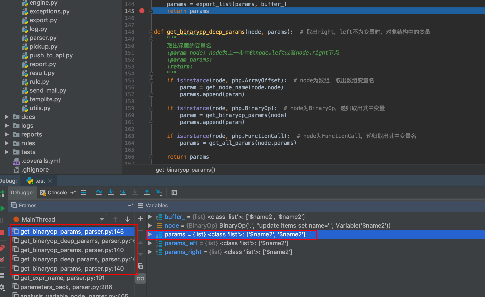

起因
朋友发现了Cobra php版本白盒审计工具有个DOS的bug，于是想着审一下代码调试一下看看是哪里的问题。具体工具介绍和使用方法就不多赘述了，详细可以看一下cobra
复现使用的php代码
1 |
|
使用CLI模式运行python cobra.py -t test.php会发现程序一直卡着不动
1 | configparser.NoSectionError: No section: 'upload' |
打开debug模式看一下python cobra.py -t test.php -d，发现很多AST语法解析debug信息
1 | [11:41:19] [DEBUG] [AST] Binaryop --> BinaryOp('.', BinaryOp('.', BinaryOp('.', "insert into items (name,content,attachment,price,catelog_id,user_id,addtime,limit_time) values ('", Variable('$name')), "','"), Variable('$content')) |
强制结束进程后观察程序报错信息，也可以在这里看到部分调用链
1 | File "/Users/kaixin.lin/Documents/penetration/cobra-master/cobra/parser.py", line 286, in parameters_back |
可以发现这里应该是有一个递归
get_binaryop_params -> get_binaryop_deep_params -> get_binaryop_params ->get_binaryop_deep_params
##parser简单分析
为了能简易的分析，使用更简单的测试样例
1 |
|
首先看到程序入口scan_parser
1 | def scan_parser(code_content, sensitive_func, vul_lineno, repair): |
直接debug可以看到这里传进来的sensitive_func, repair，其中sensitive_func为['echo', 'print', 'print_r', 'exit', 'die', 'printf', 'vprintf', 'trigger_error', 'user_error', 'odbc_result_all', 'ovrimos_result_all', 'ifx_htmltbl_result']；repair为['htmlspecialchars']
接着到analysis，主要遍历判断当前代码是否有使用调用sensitive_func列表里面的函数以及根据函数分类进入不同的处理逻辑
1 | if isinstance(node, php.FunctionCall): # 函数直接调用，不进行赋值 |
可见样例代码中使用echo函数，因此进入了elif isinstance(node, php.Print) or isinstance(node, php.Echo)分支，进入analysis_variable_node等函数，而这里主要流程是
- 取出参数
- 回溯判断参数是否可控
- 输出结果
参数是否可控主要看变量是否在controlled_params里面
1 | controlled_params = [ |
代码从下往上看$sql不是直接用户输入传入而是直接赋值的方式出现，因此会分析赋值语句右边的字符串
1 | "update items set name='$name2' where id=$id" |
phply会把以上语句解析成BinaryOp('.', BinaryOp('.', BinaryOp('.', "update items set name='", Variable('$name2')), "' where id="), Variable('$id'))类似二叉树的形式逐步展开递归去遍历语句中的变量，二叉树的拆分如下（本来想画图，但是图实在不好画）
1 | node: BinaryOp('.', BinaryOp('.', BinaryOp('.', "update items set name='", Variable('$name2')), "' where id="), Variable('$id')) |
可以看到遍历结果应该是只有两个变量Variable('$id')以及Variable('$name2')
当程序走到get_binaryop_params方法的时候
1 | def get_binaryop_params(node): # 当为BinaryOp类型时，分别对left和right进行处理，取出需要的变量 |
再进入到get_binaryop_deep_params
1 | def get_binaryop_deep_params(node, params): # 取出right，left不为变量时，对象结构中的变量 |
这里有一个递归调用过程，但是get_binaryop_params对params的处理是有问题的。
1 | params_right = get_binaryop_deep_params(node.right, params) |
params传进去get_binaryop_deep_params，再传出来赋给right和left最后再相加，明显就会出现重复的问题。

在递归过程中就会产生很多很多重复的变量，因此程序卡着不断回溯处理相同的变量。
修复方案
修复方式直接在函数里对params去重就好了（朋友提出的修复方式）
1 | if isinstance(param_expr, list): |